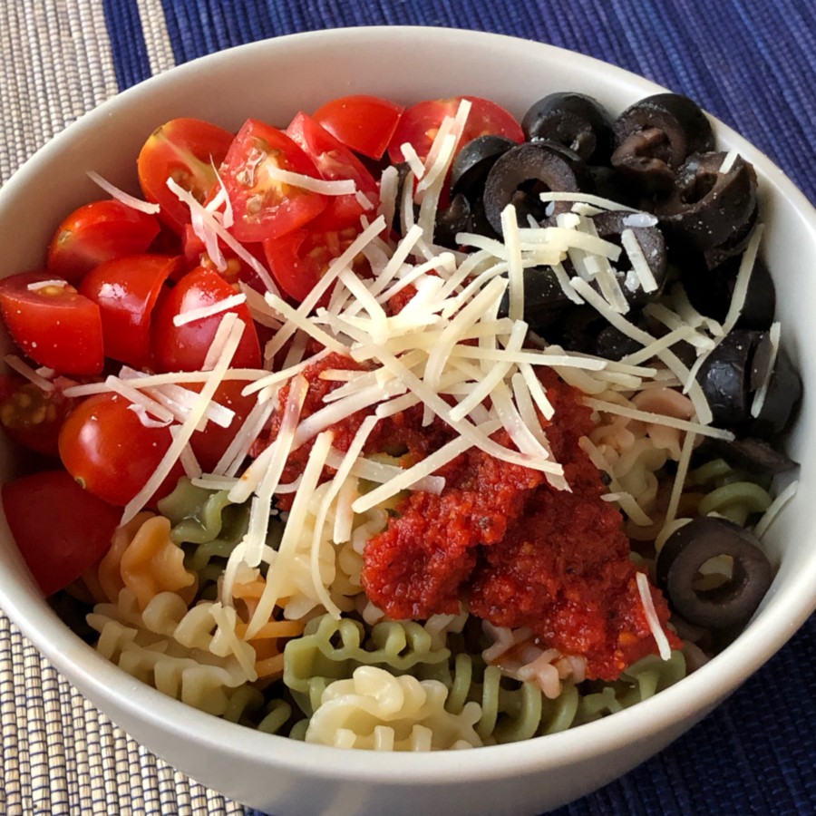

Sun-Dried Tomato Pasta Salad

Dressing, in blender:
1 jar sun-dried tomatoes (~7 oz)
~1 cup olive oil (use oil from tomatoes)
4 cloves garlic
3 tablespoons red wine vinegar
Salt & pepper
Salad:
Corkscrew pasta
Kalamata or other olives
Cherry tomatoes halved
Basil
Parmesan cheese
Toss together (may not use all of the dressing) and I prefer serving chilled (run pasta under cold water).